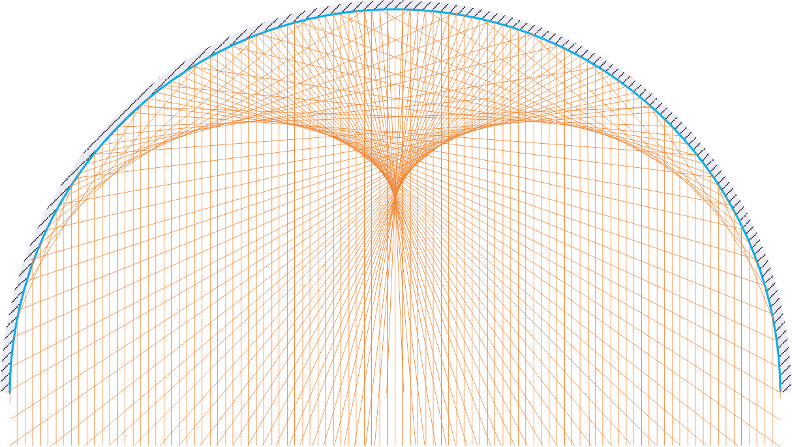
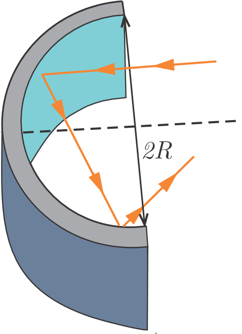
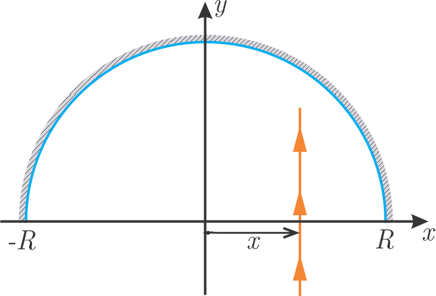
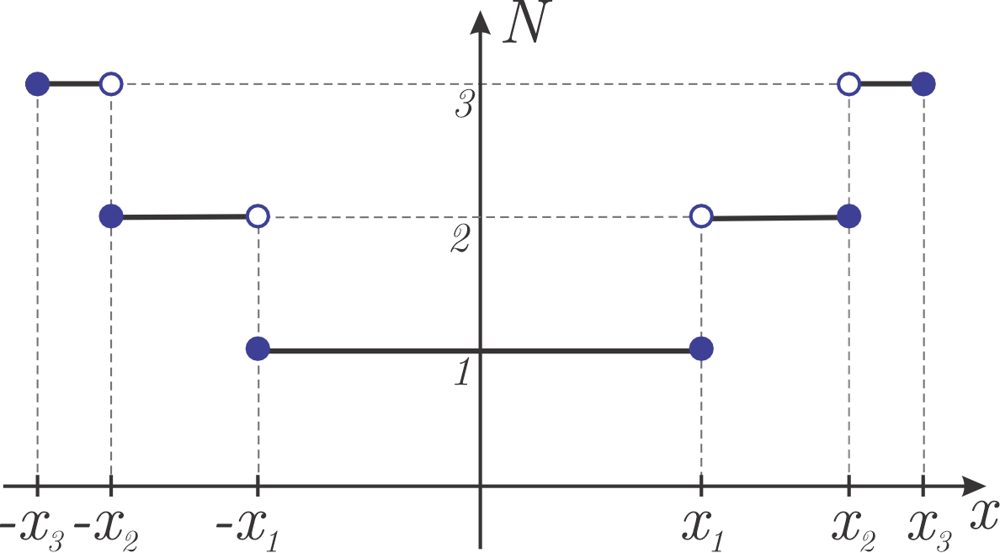
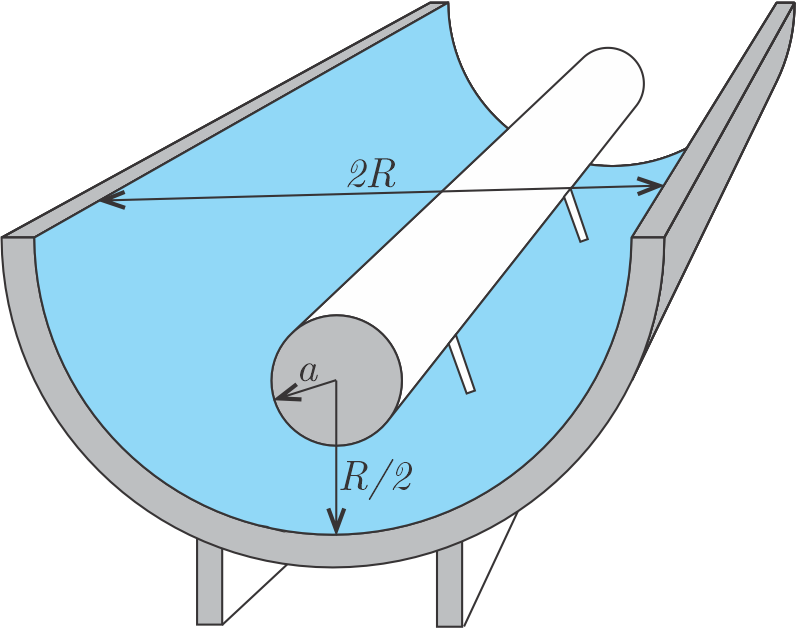
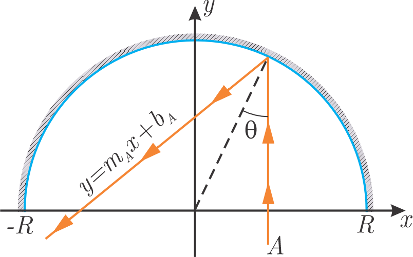

반사나 굴절에 의해 광속(luminous flux)이 세기가 큰 영역과 작은 영역으로 재분포되면 초점선(caustic)이 형성될 수 있다. 초점선은 무한히 가까운 광선들이 서로 교차하여 만들어지는 곡선이다. 예를 들어 그림 2a는 반원통 거울에 근축 광선이 입사하여 만들어진 초점선을 보여 준다. 그림 2b는 커피잔 바닥 부분에서 빛이 반사되어 만들어진 초점선의 사진이다. 초점선에서 가장 밝은 중심점을 첨점(cusp)이라 하며, 이 점에서 빛의 세기가 최대가 된다.

그림 2a.
그림 2b.
초점선은 고정밀 광학과 양자 광학에서 천체물리학에 이르기까지 과학의 여러 분야에서 응용된다. 이 문제에서는 그림 2c와 같이 반지름 $R$인 반원통 거울에서 빛이 반사되어 초점선이 형성되는 것을 다룬다. 또한 태양열 조리기에의 응용 등 이 거울의 다른 측면도 살펴본다.
문제 전체에서, 입사 광선은 멀리 있는 외부 광원에서 오며 거울의 광축과 나란하다고 가정한다. 대칭성에 의해 한 평면에서의 반사만 다루면 충분하다. 그림 2d는 그러한 평면, 거울, 그리고 문제 전체에서 사용하는 좌표계를 보여 준다.

그림 2c.

그림 2d.

그림 2e.
그림 2e는 입사 광선의 $x$좌표와 그 광선이 겪는 반사 횟수 $N$ 사이의 관계를 $N=3$까지 보여 준다. $x$가 구간 $(-R,R)$ 전체에서 변할 때 변수 $N$은 1 이상의 모든 자연수를 취한다. 거울에서 최대 $N$번 반사되도록 하는, 광축으로부터의 최대 거리를 $x_N$이라 표기한다.
T2-A1 [1.5점]. 최대 $N$번 반사되는 광선의 좌표를 제한하는 무한 수열 $x_1,x_2,x_3,\dots$에서 $x_N$의 일반식을 구하라. 답은 $R$과 $N$으로 나타내어라.

그림 2f.
속이 빈 반원통 거울과 원통형 용기로 이루어진 계를 생각하자. 원통은 완전히 흡수하는 물체이다. 즉 원통에 닿는 모든 광선은 흡수된다. 거울의 반지름은 $R$, 용기의 반지름은 $a$이다. 거울과 용기의 축은 서로 나란하다. 그림 2f와 같이 용기의 중심은 계의 대칭면 위에서 거울로부터 $R/2$ 떨어져 있다. 거울은 태양 복사를 모아 용기 안의 음식을 데운다. 햇빛의 세기(단위 면적당 일률)는 일정하고 균일하며, 광선은 거울의 광축과 나란하다고 가정한다. 또한 $a$는 원통에 흡수되는 모든 광선이 거울에서 최대 한 번만 반사되도록 하는 값이라고 가정한다. 용기에 닿는 반사 광선 중 거울에 대한(입사점에서 그은 법선을 기준으로 잰) 최대 입사각을 $\theta_{\max}$라 하자.
T2-B1 [2.0점]. 용기의 반지름은 $a=\alpha\sin(\theta_{max})+\beta\sin(2\theta_{max})$이다. $\alpha$와 $\beta$를 $R$로 나타내어라.
$\alpha$와 $\beta$를 구하지 못했다면 위에 주어진 식을 이후 문제에 그대로 사용하라.
T2-B2 [1.5점]. 거울이 없을 때 원통이 받게 될 일률을 $P_0$라 하자. 실제로 받는 일률 $P$와 $P_0$의 비 $P/P_0$를 $\theta_{\max}$로 나타내어라.
T2-B3 [0.5점]. $R=1.0$ m일 때 $P=5P_0$가 되는 $a$의 값을 구하라. 답은 cm 단위로 쓰라.
T2-C1 [0.5점]. 그림 2g와 같이 거울에 각 $\theta$로 입사하는 광선 $A$를 생각하자. 반사된 뒤, 그림 2g에 정의된 좌표계에서 이 광선의 방정식은 $y=m_{_A}x+b_{_A}$이다. $m_{_A}$와 $b_{_A}$를 $\theta$와 $R$로 나타내어라.
힌트: 기대되는 형태는 $m_A=K_1\cot(K_2\theta)$, $b_A=R\frac{K_3}{\cos(K_4\theta)}$이며, $K_i$는 수치 상수이다.

그림 2g.
T2-C2 [2.0점]. 이제 $A$와 나란하고 각 $\theta+\Delta\theta$로 표면에 입사하는 광선 $B$를 생각하자($\Delta\theta\ll\theta$). 반사된 뒤 이 광선의 방정식은 $y=m_{_B}x+b_{_B}$이다. $m_{_B}$와 $b_{_B}$를 $\theta$, $\Delta\theta$, $R$로, $\Delta\theta$의 1차까지 근사하여 나타내어라.
T2-C3 [1.0점]. 광선 $A$와 $B$의 반사 광선이 만나는 교점 $(X_c,Y_c)$의 좌표를 구하라. 답은 $R$과 $\theta$로 나타내어라.
T2-C4 [1.0점]. $\theta\ll1$일 때 $Y_c=v|X_c|^{p/q}+u$이다. $v$와 $u$를 $R$로 나타내고, 정수 $p$와 $q$의 값을 구하라(즉 유리수 $p/q$를 제시하라).